O problema central é que nossa capacidade de criar informação ultrapassou nossa capacidade de administra-la.
Semântica:
"Relacionado ao significado de algo."
Diferentes sintaxes, significado (semântica) igual.
Eu amo mexerica
Eu ❤ tangerina
I love tangerine
Je adore mandarine
私はみかんが大好き
я люблю мандарин
O problema dos computadores não entenderem significados:
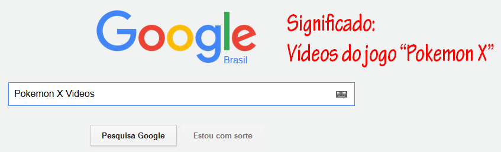
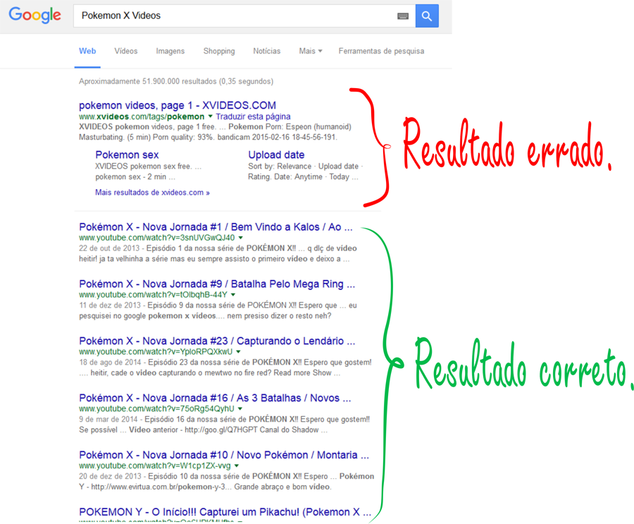
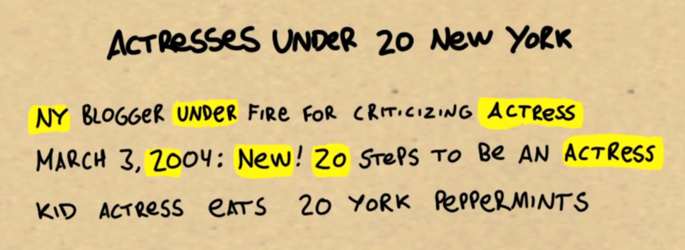
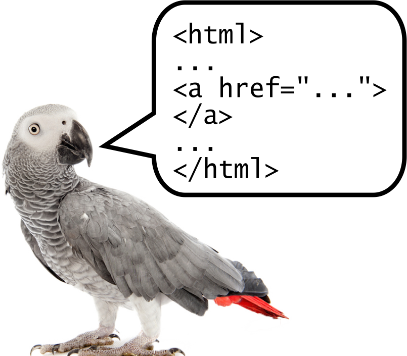
Se computadores pudessem entender o significado do que está numa página web,
ele entenderia os nossos interesses, e passaria a nos ajudar ativamente, e
não apenas passivamente.
"Web semântica tem tudo a ver com integração de dados"
Programming the Semantic Web
Usando o conceito de Web Semântica, sites seriam construídos através de conceitos ou entidades, e não só através de sintaxes ou palavras.
Essas entidades teriam atributos e teriam relacionamento umas com as outras.
Desta forma a Web passa a ser vista como uma grande base de dados.
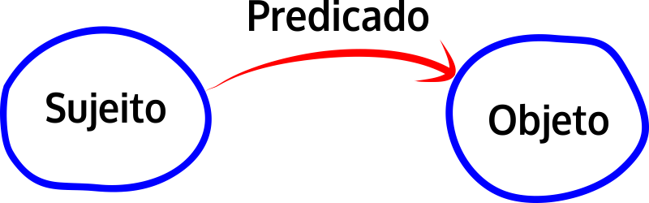
Triplas
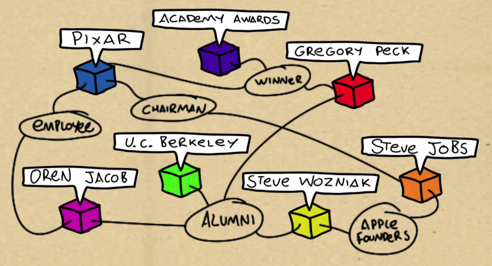
Grafo: Conjunto de triplas
Exemplos do Google:
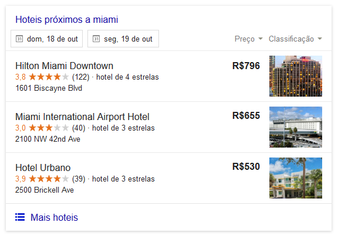
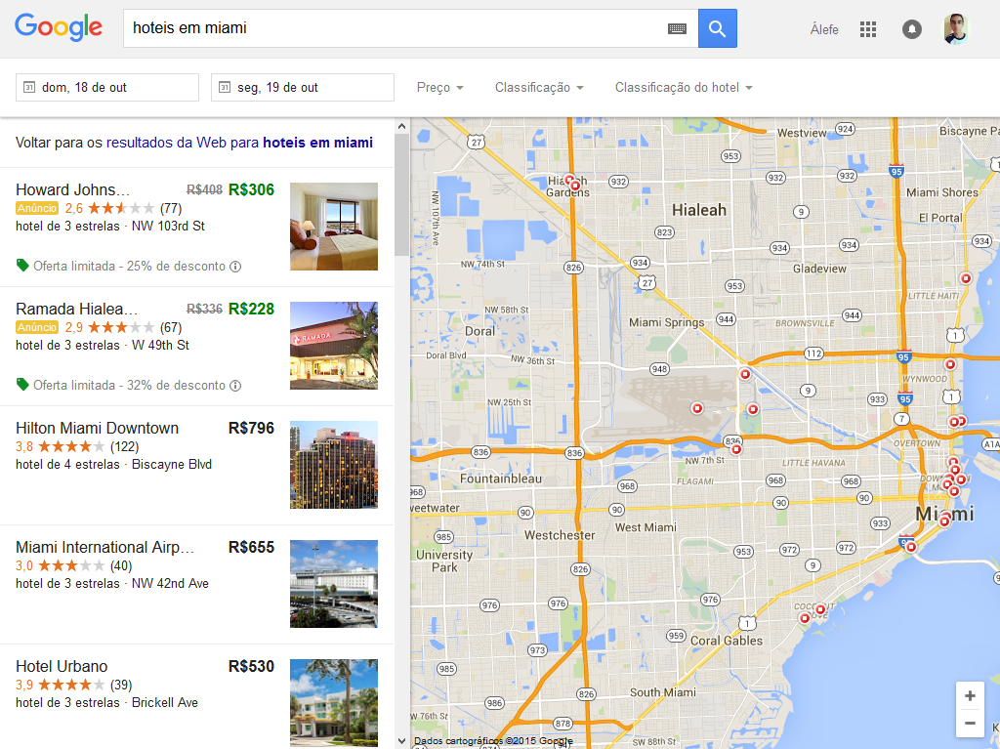
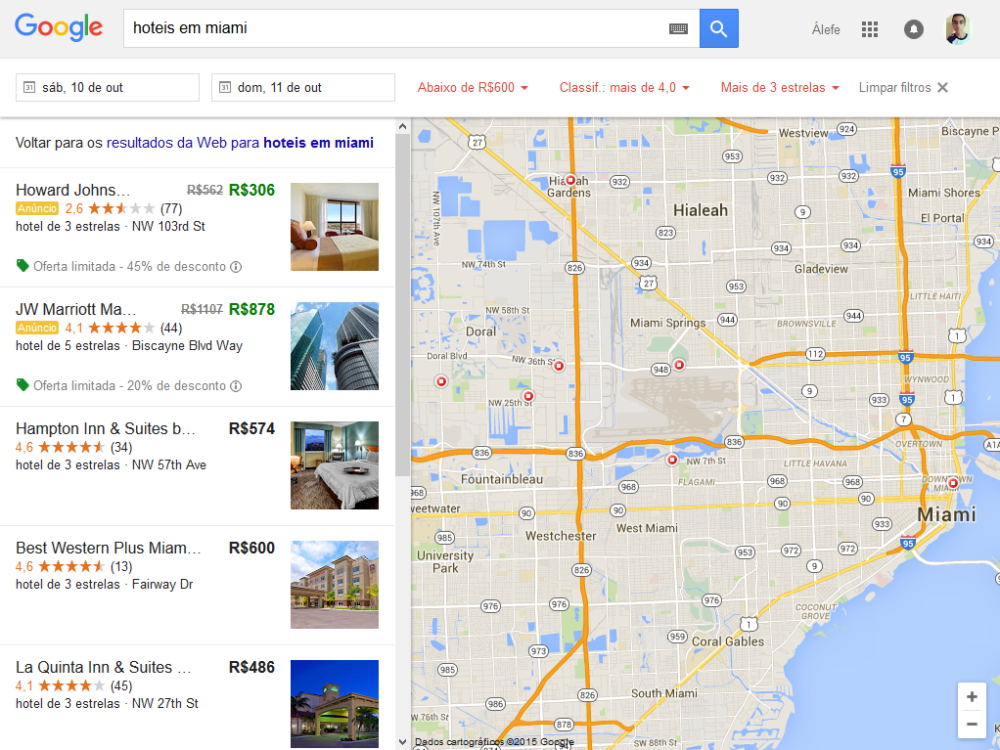
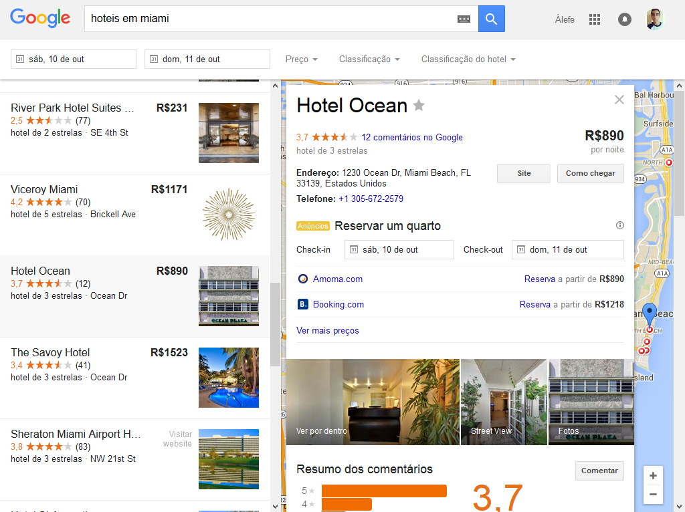
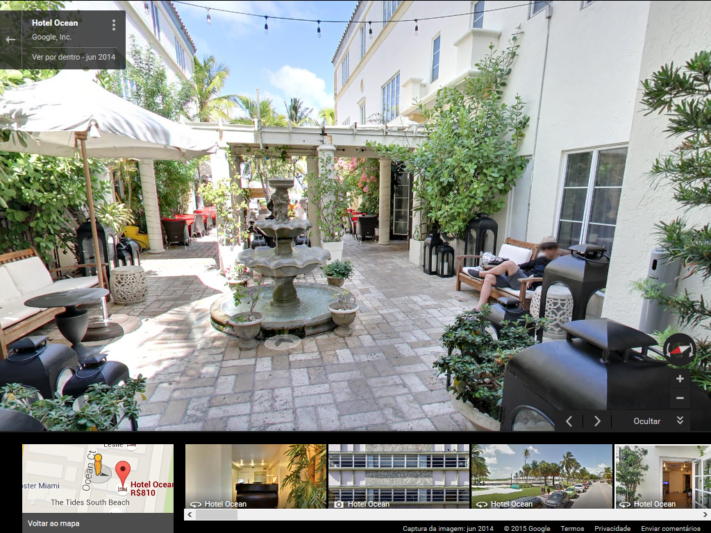
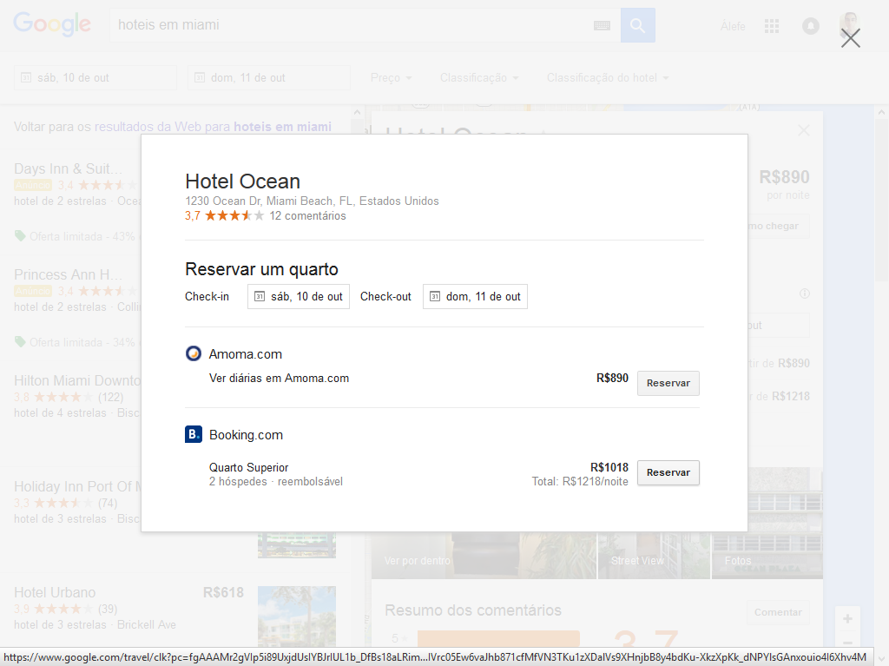
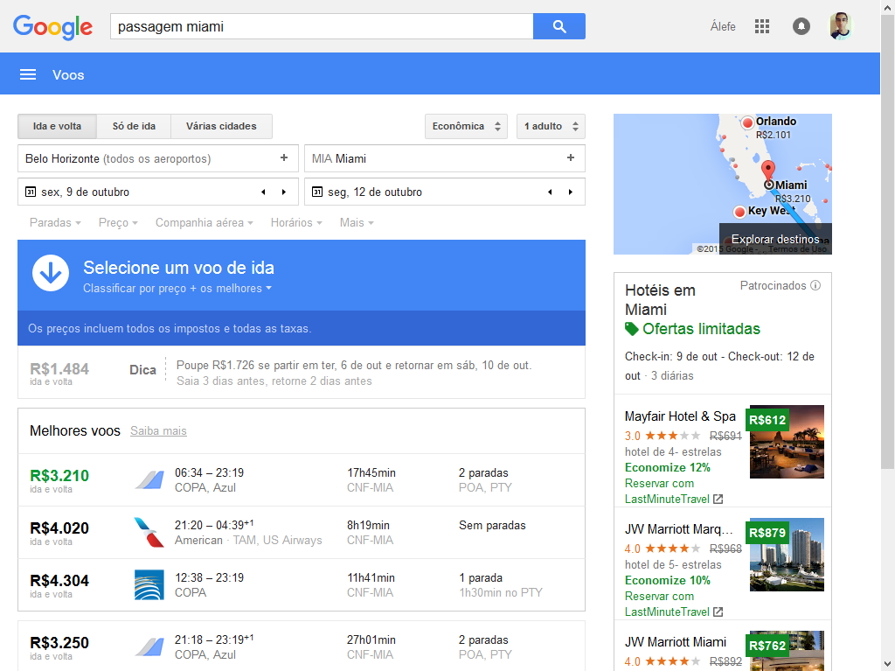
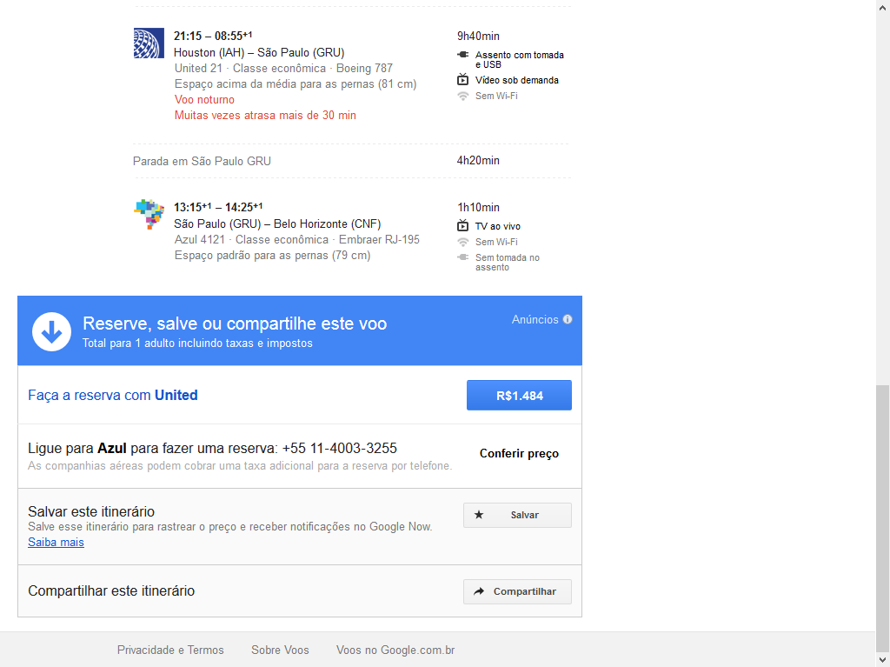
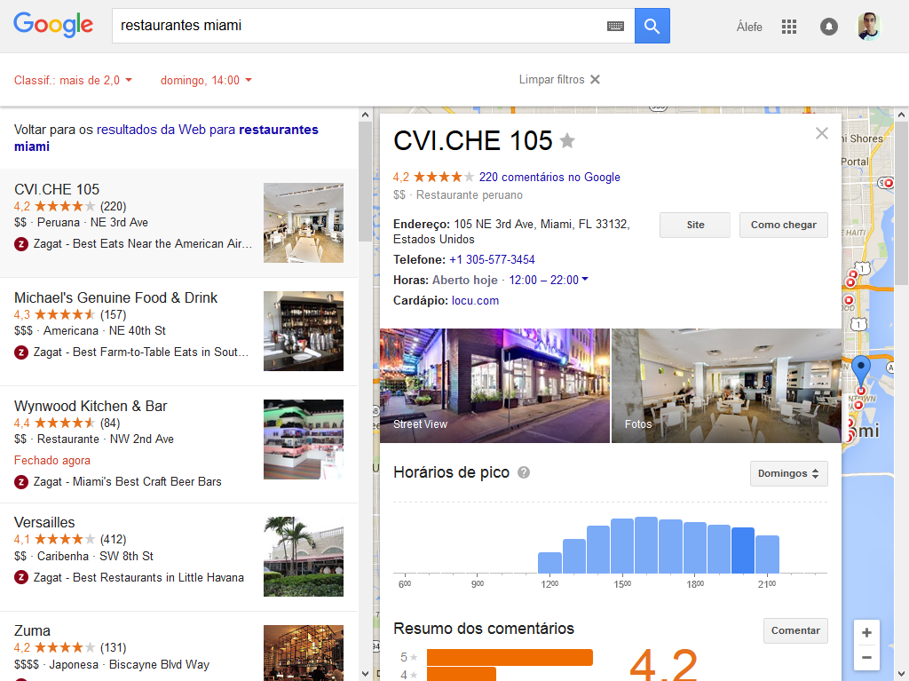